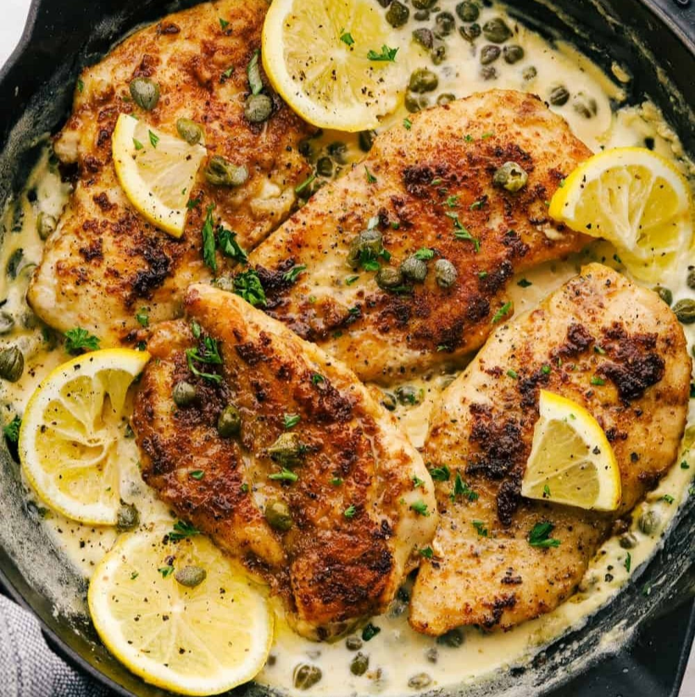
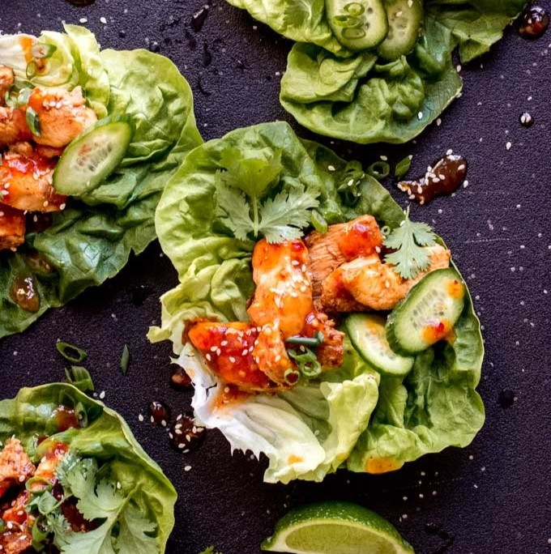
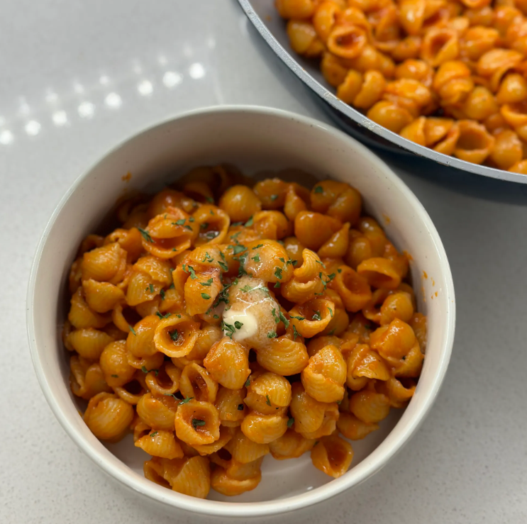
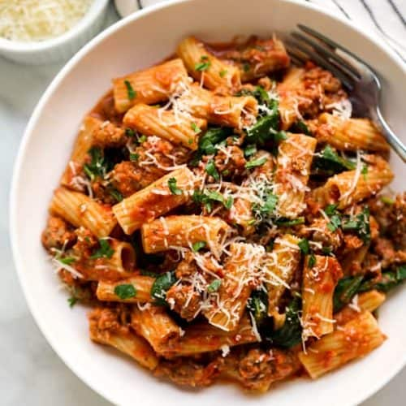
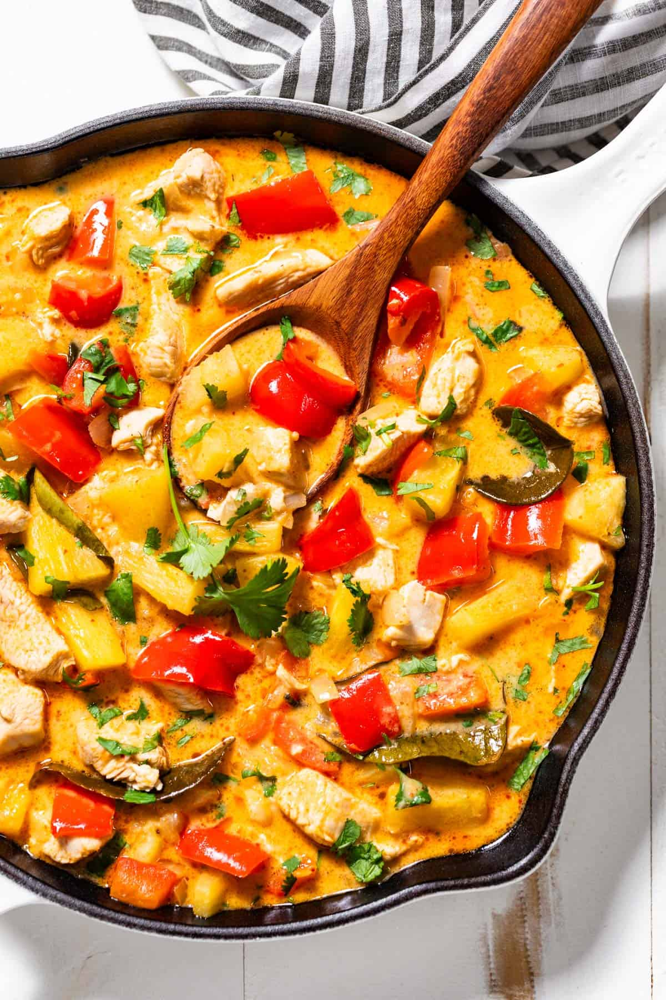
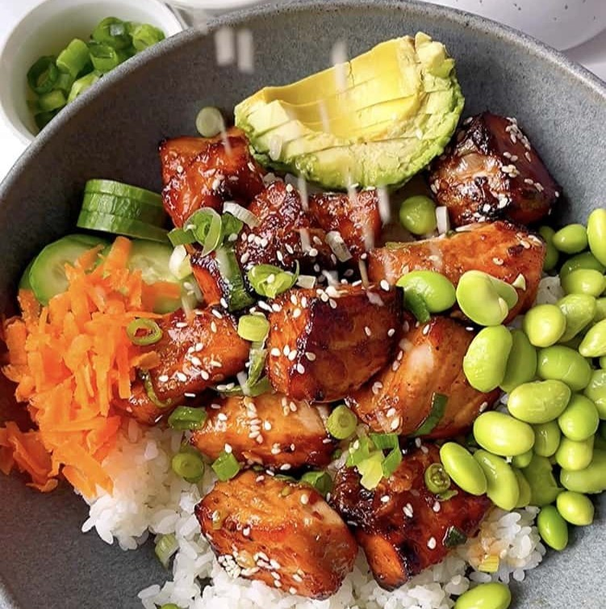
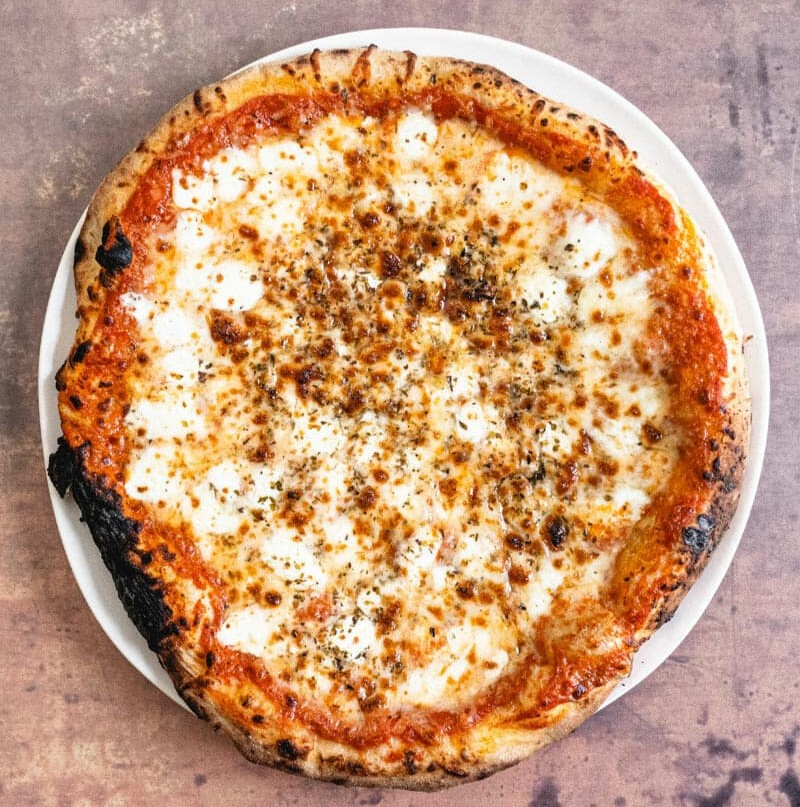
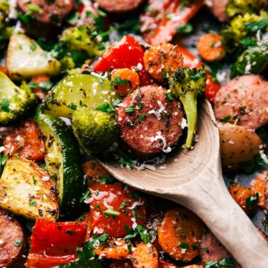

Lemon chicken

- Slice chicken breasts thin
- Dredge chicken lightly in flour mixed with a little salt and pepper
- Heat olive oil and little butter together
- Brown chicken on both sides then remove from pan
- Scrape pan to loosens the brown bits
- Add ~1tbsp of butter, melt it, and add lemon juice to taste
- Add 1/2 cup to 1 cup chicken broth and 1/2 tsp flour
- Stir to make sauce thicker and bring to a boil
- Turn down heat, add chicken back and add parsley
- Serve over orzo or egg noodles
Chicken Lettuce Wraps

- Whisk together 3 tbsp soy sauce, 2 tbsp brown sugar, 1.5 tbsp sesame oil, 1 tbsp of chili garlic
sauce, salt and pepper in a bowl
- Set aside some of the sauce for later
- Cut chicken into thin strips and add them to the marinade
- If time, let the chicken sit in the marinade for a few hours
- Heat oil to medium-high heat in a pan and cook chicken
- Add chicken to butter lettuce leaves and top with slicked cucumber, green onions and cilantro
- Heat remaining sauce on the stove to thicken and drizzle over the lettuce wraps
Chicken Cutlets

- Slice chicken breasts thin
- Mix 1 egg, a little milk, pepper and some parmesan cheese
- Add chicken and let soak for 15 mins to 1 hour
- Brown chicken on both sides then remove from pan
- Coat chicken in Italian bread crumbs
- Fry chicken in a pan with olive oil 3-5 mins per side until brown
Grilled Cheese

- Heat butter in pan
- Assemble sandwich with choice of cheese
- Cook and flip until golden brown on each side
- Serve with potato chips if desired
One Pan Pasta

- Add olive oil to a pan on medium-high heat
- Add minced garlic and your pasta of choice
- Coat the pasta in the oil and add 2 tbsp of salted butter
- Pour in chicken broth to fully cover pasta
- Bring pasta to a boil until the broth is absorbed
- Add tomato paste and a half cup of heavy cream
- Mix well and add a big pinch of salt
- Top with parsely and parmesan cheese
Chicken Stir Fry

- Cut chicken into cubes
- Coat chicken with a little flour mixed with salt and pepper
- Cook chicken in olive oil on the stove
- Remove chicken from pan and add in fresh or frozen veggies of choice
- Cook veggies till tender
- Add stir fry sauce to center of the pan
- Stir to make sauce thicker and bring to a boil
- Add chicken back in and mix all together
- Serve with rice
Homemade Chipotle Bowls

- Cut chicken into cubes
- Coat chicken with salt, pepper, paprika, chile powder, garlic powder and chipotle seasoning
- Cook chicken in olive oil on the stove
- Cook rice and add in cilantro and lime juice to taste when finished
- Combine with a choice of guacamole, salsa, cheese etc.
Italian Sausage Pasta

- Put one pack of italian sausage in a pot and cook on medium heat
- Break up the sausage into bite sized pieces as it cooks
- Separately cook pasta accoding to the directions on the box
- Add in tomato sauce to the sausage and heat it up
- Season sauce with basil, garlic powder, red pepper flakes and salt
- When pasta is done, add it to the sauce and serve
- Top with fresh basil and parmesan if desired
Chicken and Pineapple Curry

- Cut 1-2 chicken breasts into cubes
- Season chicken with salt, pepper, paprika and garlic powder
- Cook chicken in olive oil on the stove then set aside
- Using the same pan on medium heat add minced garlic and 2 tbsp of red curry paste and mix with
the leftover oil
- Add in 3/4 of a can of coconut milk, diced bell pepper and carrots cut into thin sticks
- Cook until veggetables are tender, then add ~1 cup of cubed pineapple
- Bring the curry to a simmer and season with salt to taste
- Stir in chicken and chopped cilantro
- Remove from heat and serve with rice and extra cilantro
Salmon Bite Bowl

- Cube salmon and remove any skin and bones
- Combine 2 tbsp of soy sauce, 2 tsp of honey, 1 tsp of rice vinegar, 1/2 tsp of sesame oil, garlic and ginger in a bowl
- Marinate salmon bites for 10 minutes in the mixture
- Cook salmon cubes on medium-high heat for 5-7 minutes and pour leftover marinade over the salmon
- Assemble bowls with rice, salmon, cucumber, carrots, avocado and edamame
Homemade Pizza

- Pick up pre made pizza dough from Kroger or Trader Joes, or make your own
- Line a baking sheet with parchment paper or spray with cooking spray
- Spread dough out into a circle
- Top with your choice of tomato sauce, seasonings, cheese and other toppings
- Bake at 425* F for 15 minutes or until fully cooked
One Pan Italian Sausage and Vegetables

- Line a large sheet pan with parchment paper
- Cut carrots and red bell pepper into slices
- Cut brocoli into florets so they are about the same size as the other vegetables
- Cut sausage into small coins or cubes
- Put all vegetables and sausage onto the sheet pan and drizzle with olive oil
- Season with salt, pepper, italian seasoning, garlic powder and red pepper flakes
- Toss vegetables and sausage and space out everything so there is room to roast
- Bake at 400* F for 15 minutes, then flip everything and bake for another 10 minutes
- Serve with rice or orzo if desired